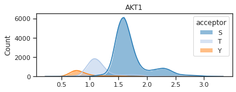
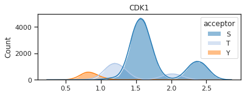
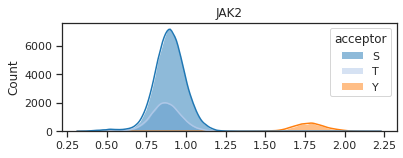

import pandas as pd
from matplotlib import pyplot as plt
from katlas.core import *
from katlas.plot import *
import seaborn as sns
from tqdm import tqdm
import numpy as np
tqdm.pandas()Plot score distribution for single kinase
Setup
sns.set(rc={"figure.dpi":300, 'savefig.dpi':300})
sns.set_context('notebook')
sns.set_style("ticks")Substrate scoring
# you can also directly load through Data
comb= Data.get_combine_site_psp_ochoa()comb['acceptor'] = comb.site_seq.str[7]results = predict_kinase_df(comb,'site_seq',**param_CDDM_upper)
df = pd.concat([comb,results],axis=1)palette = get_color_dict(['S','T','Y'],'tab20')
hist_params = {'element':'poly',
'edgecolor': None,
'alpha':0.5,
'bins':100,
'kde':True,
'palette':palette}def plot_hist(df,kinase):
plt.figure(figsize=(6,2))
sns.histplot(data=df,x=kinase,hue=df.acceptor,**hist_params)
plt.xlabel('')
plt.title(kinase)def get_genes(kinase,s=None,t=None,y=None,export=False):
df2 = df[['gene','acceptor']].copy()
df2['gene'] = df2.gene.str.split('|')
df2[kinase] = results[kinase]
print(df2.shape)
df2 = df2.explode('gene')
print(df2.shape)
L = []
if s is not None:
s = df2.query(f'acceptor == "S" & {kinase}>{s}')['gene'].drop_duplicates()
L.append(s)
if t is not None:
t = df2.query(f'acceptor == "T" & {kinase}>{t}')['gene'].drop_duplicates()
L.append(t)
if y is not None:
y = df2.query(f'acceptor == "Y" & {kinase}>{y}')['gene'].drop_duplicates()
L.append(y)
sty = pd.concat(L).drop_duplicates().reset_index()
if export:
print('exporting csv file for st')
sty.to_csv(f'supp/{kinase}.csv')
return styplot_hist(df,'ATM') # S: 2.3, T: 1.55
st = get_genes('ATM',s=2.3,t=1.55)(116887, 3)
(123515, 3)
exporting csv file for stplot_hist(df,'AKT1') # S: 2.55, T: 1.6
y = get_genes('AKT1',s=2.55,t=1.6)(116887, 3)
(123515, 3)
exporting csv file for stplot_hist(df,'EGFR') # Y: 2.1
y = get_genes('EGFR',y=2.0)(116887, 3)
(123515, 3)
exporting csv file for stOthers
plot_hist(df,'CDK1')
y = get_genes('CDK1',s=2.0,t=1.65)(116887, 3)
(123515, 3)
exporting csv file for sty = get_genes('CDK1',s=2.0,t=1.65)(116887, 3)
(123515, 3)
exporting csv file for stplot_hist(df,'JAK2')# Y: 2.0
_ = get_genes('JAK2',y=2.0)(116887, 3)
(123515, 3)
exporting csv file for stplot_hist(df,'ZAP70') # Y: 2.1
plot_hist(df,'LCK') # Y: 2.1
plot_hist(df,'PKACA') # S: 2.5, T: 1.5